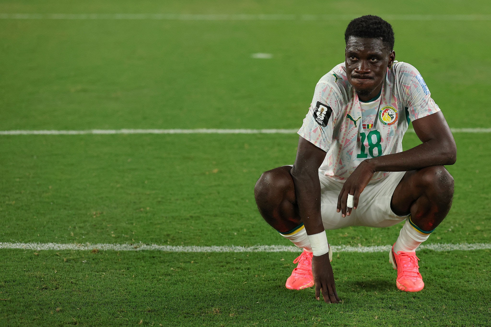

By George Oyefeso
By George Oyefeso
The knockout stage of the World Cup is in full swing, and one of the most intriguing fixtures features Thomas Tuchel's tactical unit taking on the explosive, physically formidable Senegal. This Round of 32 matchup has all the ingredients of a modern tactical duel.
While the Three Lions entered this stage with high tournament expectations under their German mastermind, their recent performances have shown signs of vulnerability. Meanwhile, Senegal's seasoned contingent—boasting names like Kalidou Koulibaly and Nicolas Jackson—are highly experienced in big-game execution. Let's break down the core systems, key player matchups, and predict the final outcome.
The Tactical Landscape
England: Positional Rigidity and Controlled Tempo
Thomas Tuchel has implemented his trademark 4-2-3-1 structure, leaning heavily into defensive solidity and structural assurance. Under his guidance, the squad has proved difficult to penetrate, prioritizing clean sheets over chaotic, free-flowing attacking sequences.
During the build-up phase, England often transitions into a back-three variation to free up wide players. Declan Rice anchors the midfield metronome, while players like Cole Palmer or Eberechi Eze are expected to operate between the defensive lines. Up front, Harry Kane continues his deep-dropping playmaker duties to orchestrate attacks and free up space for inverted wingers.
Senegal: Rapid Transitions and Midfield Combativeness
Senegal thrives on exploiting spaces left by dominant possession units. Operating in a pragmatic but fluid shape, they rely heavily on their athletic prowess to shut down central progressive paths before executing devastating transitions.
With Lamine Camara and Idrissa Gueye sweeping up loose possessions in the middle third, Senegal transitions play immediately into the wide spaces. The speed and direct dribbling of Ismaïla Sarr on the flank combined with Nicolas Jackson's physical central presence makes Senegal's attack highly chaotic and extremely difficult to contain in 1v1 situations.
Key Tactical Battles
1. Harry Kane vs. Kalidou Koulibaly
This central duel represents a classic elite match-up. Koulibaly's physical strength and tight man-marking system will look to prevent Kane from turning comfortably when he drops deep. If Koulibaly can isolate Kane and cut off his supply lines to the fast English wingers, Senegal can effectively neutralize England's primary attacking dynamic.

2. Ismaïla Sarr vs. Levi Colwill
Ismaïla Sarr's directness and vertical threat pose a significant problem down England's left-hand side. Levi Colwill, expected to start at left-back, will need to balance his natural central tendencies with the aggressive defensive positioning needed to keep Sarr at bay. Without adequate covering support from midfielders, Sarr could isolate Colwill in wide-area transitions.

3. Dealing with the Low Block
England's biggest frustration under Tuchel has been a lack of vertical urgency against narrow defensive low-blocks. If Senegal drops into a deep defensive line, England will need quick, lateral ball progression and overlapping runs from fullbacks like Trent Alexander-Arnold to avoid becoming predictable and stale in possession.
Match Prediction: England 1–0 Senegal
This fixture will be determined by extremely narrow margins and is unlikely to be a high-scoring affair. Senegal's disciplined midfield line will disrupt England's central build-up play, frustrating Tuchel's side for the majority of the match.
However, England's superior squad depth and ability to alter games off the bench—featuring dynamic outlets like Cole Palmer and Bukayo Saka—should ultimately tip the scales. Expect a late, clinical breakthrough from Harry Kane or a set-piece variation to secure the narrow victory and send England into the last 16.
Score Prediction: England 1, Senegal 0